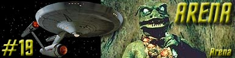

|
Srie
Clssica
Temporada 1

Anlise do episdio por
Carlos
Santos


|
MANCHETE
DO EPISDIO Data Estelar: 3045.6. Atendendo a um convite de um comodoro famoso por sua hospitalidade, a Enterprise chega a Cestus III, um posto avanado da Federao situado em espao profundo. Um grupo de desembarque que alm de Kirk, McCoy e Spock inclui ainda (aparentemente a pedido dos prprios habitantes do posto avanado) o pessoal ttico da nave, desce a superfcie, onde descobre rapidamente que todas as instalaes foram destrudas por um atacante desconhecido. Aps comunicar a situao a Sulu, que ficou no comando da Enterprise, e encontrar um sobrevivente gravemente ferido, o grupo de descida atacado aparentemente pelos mesmos responsveis pelo ataque ao posto avanado. Kirk requisita transporte de volta a bordo, mas Sulu informa que a nave est agora tambm sob ataque o que o impede de baixar os escudos sem se expor ao fogo inimigo. Sulu recebe ordens expressas de Kirk para defender a nave a qualquer custo e para cumprir tal ordem o tenente obrigado a deixar a rbita de Cestus III, deixando o grupo de desembarque para trs. Em terra, Kirk e seu pessoal so obrigados a se virar como podem para se defender e aps perder dois homens, conseguem contra-atacar, usando um item do arsenal do prprio posto avanado. O ataque sob o grupo em solo encerrado ao mesmo tempo em que Sulu retoma as comunicaes informando que a nave que antes atacava a Enterprise partiu um pouco depois de um sinal de tele-transporte ter sido captado. Kirk ordena o envio de um novo grupo de descida para procurar por sobreviventes e retorna a nave trazendo junto com ele o sobrevivente encontrado em terra iniciando uma perseguio nave atacante. Kirk decide, a despeito do ceticismo de Spock, que o ataque (e o convite falso enviado) foi uma trama a fim de trazer a Enterprise a Cestus III com o propsito de destru-la e em seguida iniciar uma invaso a Federao, ento decide aproximar-se da nave atacante com inteno de destru-la. Quando a Enterprise comea a se aproximar do inimigo, Uhura informa que a nave est sendo sondada por um sinal no identificado proveniente de um sistema estelar prximo rota seguida pela nave perseguida. Logo em seguida a nave inimiga perde fora de dobra e para completamente no espao e ao perceber isto Kirk ordena a aproximao final para o ataque, mas subitamente a Enterprise tambm perde sua toda sua fora e para. Spock identifica o sistema estelar que haviam notado antes como a fonte dos problemas da nave. Neste momento, seres que se identificam como Metrons se comunicam com a Enterprise, informando que esta havia entrado em seu espao, e que tal ato motivado por razes violentas no seria tolerado. Os Metrons revelam que a nave a qual a Enterprise perseguia era pertencente a uma raa chamada Gorn. Kirk e o capito da nave Gorn so transportados pelos Metrons para um planeta onde devero combater at a morte, cabendo ao vencedor passagem livre de volta para casa e ao perdedor a destruio de sua nave e sua tripulao. Kirk transportado ento ao planeta onde j se encontra seu oponente, uma criatura que lembra algum tipo de rptil, muito forte e violento, e que imediatamente tenta atac-lo. Kirk consegue fugir (seu oponente se move de forma muito lenta) e percebendo que no ter chances em um combate corpo a corpo, comea a procurar por algum material que lhe permita construir algum tipo de arma - material que os Metrons garantiram existir no planeta - enquanto os oficiais da Enterprise tentam sem frutos fazer retornar a fora da nave. Spock insiste em tentar restabelecer contato com os Metrons, mas ignorado. Enquanto isto, Kirk prossegue com dificuldades a luta por sua sobrevivncia, algo que os prprios Metrons julgam estar seriamente ameaada. Estes resolvem entrar em contato com os Federados apenas para informar a tripulao da Enterprise para que se preparem para serem destrudos, e permitem que o fim da batalha seja assistido pela tripulao da ponte da Enterprise atravs da tela visual. Na superfcie do planeta, o capito dos Gorns se comunica com Kirk, revelando que o posto de Cestus III havia sido destrudo por estar em seu territrio. Kirk comea ento a montar uma arma, uma espcie de canho primitivo construdo a base de substncias encontrveis no planeta, conforme os Metrons haviam dito no inicio. Kirk dispara seu canho contra a criatura e consegue imobilizar o Gorn, que fica a sua merc, inconsciente, mas reluta em dar o golpe final, finalmente racionalizando que o ataque ao posto no fosse o preldio de uma invaso, mas sim uma defesa territorial. Um dos Metrons aparece e fascinado pelo ato de Kirk decide libert-lo junto com sua tripulao. Kirk pede ainda que os Gorns sejam tambm libertados e em seguida retorna a nave, que lanada para longe de sua posio inicial no espao Metron. Kirk ordena a Sulu ento que a nave retome o curso para Cestus III.
A primeira coisa que chama a ateno em Arena o seu tom extremamente militarista, e por isto estranha-se que ele tenha passado pelo crivo de Gene Roddenberry que sempre se apresentou como contrario a mostrar a Frota Estelar como uma organizao primariamente militar. Nicholas Meyer sofreu presso durante a produo de Jornada nas Estrelas VI: A Terra Desconhecida, por que sempre viu a Frota Estelar como uma organizao formalmente militar e no para militar como insistia Roddenberry (posio tornada cristalina especialmente no perodo de sua vida do final dos anos setenta at a sua morte). Todas as aes de Kirk aps a descoberta da destruio de Cestus III demonstram um Modus Operandi (MO) tpico de caserna, e no de um capito pertencente a uma organizao cuja meta primria seja a pacfica explorao espacial e este clima ou sentimento define boa parte das aes iniciais da histria. Embora um ataque de uma raa desconhecida a um posto avanado da Federao seja um motivo mais do que suficiente para que sejam tomadas providncias, as concluses de Kirk, baseadas puramente em especulaes, beiram a esquizofrenia e a parania, afinal, imaginar que um ataque a um longnquo posto avanado fosse o prenuncio de uma invaso ao territrio da Federao algo quase fantasioso. Alm disto, a informao de que a Enterprise seria a nica defesa daquele setor algo difcil de acreditar, principalmente se levarmos em conta premissa bsica da Srie Clssica, afinal a Enterprise uma nave em misso de pesquisa e explorao cientifica de cinco anos, o que obrigatoriamente a levaria a espao desconhecido, e no uma nave destinada a patrulhar um determinado e conhecido setor do espao da Federao contra hipotticas ameaas, o que daria uma conotao totalmente militarista a misso da mais famosa nave da Federao!? Mais do que isto, James Kirk, baseado apenas em tais suposies e especulaes decide colocar a nave em uma perseguio com nico objetivo de destruir o agressor, e sem nenhuma preocupao em informar seu comando sobre o ataque a Cestus III. Como Spock bem disse pouco tempo depois, na sequncia do episodio, este seria um assunto mais bem resolvido por diplomatas. Alm disto, fosse a ameaa verdadeira e a Enterprise destruda no processo a Federao seria pega totalmente de surpresa pela fora invasora. Fica bvio que a prioridade de Kirk deveria ser coletar o mximo de informaes possvel e lev-las ao Comando da Frota Estelar. Mesmo que uma resoluo de Guerra fosse tomada no caberia a Kirk e a Enterprise tomar esta deciso. Toda a falcia belicista (o ataque gorn a Cestus III e a tentativa de contra-ataque) e intervencionista do episdio, presente em frases como uma questo de poltica, aqui somos os nicos patrulheiros e um crime foi cometido! Peca gravemente contra o esprito que os fs mais apreciam na srie, e faz do capito da Enterprise o portador de uma mensagem de mau gosto. claro que no h como afastar a Frota Estelar de sua estreita relao com nossos atuais servios militares, por mais que Roddenberry quisesse negar isto, mas existem maneiras e maneiras de se tratar certos assuntos, e o melhor exemplo para contraste est dentro da prpria Srie Clssica e nesta mesma primeira temporada. Todas estas questes foram levantadas e tratadas de forma muito mais competente no clssico episdio Balance of Terror (do qual Arena parece um remake mal feito em diversos sentidos), que tem todos os elementos descritos acima, mas resulta em um inesquecvel episodio. Naquele episodio, temos um posto avanado da Frota Estelar atacado, uma chamada a Enterprise para investigar, e uma perseguio com o firme e nico propsito de destruir o inimigo, entretanto detalhes aparentemente discretos criam um abismo de qualidade entre ambos os segmentos. Em Balance Of Terror, os inimigos tem uma historia anterior de conflito com a Terra (no a Federao), tem um forte senso de propsito e existe um conhecimento, embora limitado, da forma de pensar e agir destes inimigos: no caso os Romulanos. Mais ainda existe uma clara e inequvoca determinao do comando da Frota Estelar quanto a uma eventual situao critica envolvendo um encontro entre foras de ambas s potncias. Existe um tratado que diz que o ato de atravessar a fronteira estabelecida significa um ato de guerra, logo Kirk no age a partir de especulaes. Outra lio que podemos tirar de Balance of Terror a importncia que os antagonistas tem para um bom desenvolvimento da trama. Esta lio parece ter sido esquecida em Arena, pois os Gorns, ao destrurem um posto da Frota Estelar da forma como foi retratado no segmento, ou seja, sem aviso, de forma traioeira simplesmente por que o posto estava l e ainda preparando uma armadilha com o intuito de aumentar seu numero de vitimas, so jogados na vala comum de estereotipo do tpico vilo hollywoodiano, que age e mata pela simples razo de dar ao mocinho do filme o que fazer. No bastasse este erro de concepo, os erros de execuo tambm no contribuem muito para o bom andamento do episodio. Kirk desce a Cestus III com sua equipe ttica, inveno de roteiro que nunca apareceu antes e que jamais apareceria depois. (algum se lembra da equipe ttica presente em Balance of Terror?) e que se reduz a trs pessoas, incluindo ai um camisa vermelha (um daqueles oficiais de segurana que aparentemente tem o nico propsito de descer a um planeta e ser morto), e aps andar com relativa tranqilidade pelo local destrudo, encontra um sobrevivente, segundo McCoy gravemente ferido. A primeira reao de Kirk mant-lo vivo para saber o que aconteceu, e que se dane o resto, mas ningum pensa em lev-lo de volta a nave imediatamente. Em seguida ele manda o tal camisa vermelha adiante, que para bem na posio onde devia haver um X e uma inscrio voc morre aqui. Tudo bem que o tripulante tenha que morrer, mas precisa ficar em p com aquela vistosa camisa vermelha e dar um grito para Kirk que estava a exatos trs passos de distncia dele? Igual sutileza s pode ser vista em estouros de rinocerontes. O camisa vermelha morre, desintegrado por arma de energia eficiente e silenciosa e precisa e ento, comea um bombardeio sobre o grupo de descida, inexplicvel aps vermos como o alferes O'Herlihy foi morto. Exploses comeam a pipocar por todos os lados, com direito ao zunido das bombas voando e tudo mais. Mas se um desruptor uma arma de energia, de onde viria este som? Uma seqncia que deveria causar uma sensao de perigo eminente, mas que falha devido s inconsistncias apontadas acima. Comea ento uma seo de corridas e piruetas dignas de risadas, primeiro de Kirk, depois de Spock. Corridas estas em busca de um arsenal, que foi construdo de tal forma desprotegido que ficou totalmente acessvel aps o ataque. Impressionante tambm que os Gorns tenham tido tempo de descobrir como funcionava todo o protocolo da Frota Estelar, descobrindo o nome da nave mais prxima e de seu capito a ponto de poder enviar a tal mensagem para Enterprise e no vasculharam o local em busca de armas, que estavam to acessveis. Incrvel. (Talvez seja ainda mais improvvel o fato dos sensores da Enterprise no detectarem o posto avanado destrudo a tropa inimiga em terra e muito menos a nave inimiga em rbita. incrvel que Kirk tenha que descer para da dar o aviso de que ocorreu um ataque em Cestus III.) No meio do caminho, Kirk fica ditando a Sulu o que fazer (erguer escudos, disparar feisers, disparar torpedos, etc, etc) apesar de estar em terra no meio de um bombardeio, numa demonstrao de que no tem nenhuma confiana em seu staff de comando. Tivesse Sulu alguma dignidade continuaria na carreira de botnico. Finalmente, Kirk encontra uma arma, e descobrimos que a raa humana descobriu a dobra espacial, construiu naves de altssima tecnologia, mas no conseguiu pensar nada mais eficiente que um obus como arma de defesa, alias, uma arma que de acordo com o que vimos no episodio, segue os padres de seu antecessor da poca da segunda guerra, onde era usada contra blindados e tropas de terra. O que este tipo de armamento estaria fazendo em uma pacifica colnia da Federao? Tudo isto para que se pudesse chegar ao clmax do episodio, ou seja, o primeiro julgamento da humanidade por uma raa aliengena extremamente mais avanada (TM), um dos clichs que viraram marca registrada da franquia. Os Metrons aparecem e se predispe a resolver o problema de uma forma lgica, simples e limpa e se a proposta destes seres a primeira vista possa parecer pouco civilizada, devemos lembrar a esclarecedora fala do Metron: No era isto (destrurem um ao outro) que vocs pretendiam?. A apario dos Metrons, alm de remeter a alguns episdios da prpria Srie Clssica, tambm nos leva (entre outros segmentos da Franquia) ao episodio piloto de A Nova Gerao, Encounter At Farpoint, onde nosso querido Q introduzido, com o mesmo propsito de julgar os atos de seres humanos. Mas outra lembrana ainda mais forte pode ser a de outro episodio daquela mesma primeira temporada de A Nova Gerao. Em The Last Outpost temos a Enterprise de Picard perseguindo uma nave Ferengi (raa que fez a sua estria naquele episdio) at que ambas so imobilizadas por uma fora desconhecida, que depois se descobre ser oriunda de um planeta prximo. Sendo tal fora controlada pelo guardio, um membro de um imprio que no mais existia. Mais do que isto, ainda se v naquele segmento mais uma prova formal para a raa humana, representada por Riker. Segundo os termos do guardio, o vencedor do desafio estaria livre para ir e para decidir o destino do oponente. Mera coincidncia ou reciclagem mal disfarada? Voltando a Arena, o lagarto Gorn est certamente entre uma das mais ridculas criaes do Staff de Jornada nas Estrelas. A roupa de borracha incapaz de realizar qualquer movimento de forma descente e que torna o oponente de Kirk lento e desajeitado, em momento algum permite que se credite alguma seriedade a situao do capito da Enterprise. Tomem como exemplo a primeira luta dos dois oponentes, que tomou claros contornos de comedia involuntria. A didtica descrio fornecida por Kirk, literalmente narrando seus pensamentos e descobertas absolutamente desnecessria e em momento algum consegue imprimir alguma dramaticidade (acreditando-se que fosse esta inteno) principalmente, pois obvio que Kirk est passeando por sobre os tais materiais oferecidos para a construo das supostas armas o tempo todo, alis, a construo da tal arma, o primitivo canho de Kirk, deve ter sido a inspirao para a criao do seriado McGyver e mesmo imaginando que nosso nobre capito tenha sido capaz de lembrar de suas aulas de Qumica, acertando a composio e proporo dos elementos necessrios para montar o seu brinquedinho, devemos nos perguntar se realmente devemos chamar de inteligente uma pessoa (ou um lagarto gigante) que caminha de forma lenta e estpida em direo a um artefato que Kirk (que se sabia estar a fim de faz-lo passar desta para melhor) apontava direto para seu peito. Pouco provvel. A idia de fazer a tripulao da ponte assistir ao que se passava em terra deve-se apenas a arrumar algo para ocupar os atores, e nada acrescenta ao episodio, a no ser mais uma didtica e enfadonha narrao (na realidade narrao da narrao), desta por Spock a bordo da Enterprise. Depois disto tudo, um final bvio e previsvel onde Kirk poupa seu inimigo, passando no primeiro grande teste da humanidade, pelo menos na Srie Clssica, tudo totalmente artificial, assim como artificial foi a resoluo final do episodio, que faz crer que toda a destruio causada pelos Gorns em Cestus III ficou por isto mesmo, depois que Kirk decidiu que o que aconteceu foi um acidente. E por falar nisto, Cestus III continuou sendo base da Federao ou no? No interessa, pois ela s estava l para ser destruda e dar a Kirk uma motivao legitima para sair caando rpteis pelo espao, em seu Jihad particular.
Arena
uma histria que ignora o comportamento dos principais personagens da srie
em segmentos anteriores. Um James Kirk com julgamento embotado pelo sentimento
de vingana, um Spock incapaz de cumprir sua tarefa de auxiliar seu capito na
busca de um melhor posicionamento durante uma situao potencialmente critica,
e um McCoy inerte, bem longe daquele personagem de personalidade forte e decidido
que por vezes contestou tanto Kirk quanto McCoy quando isto foi necessrio. Usa
e abusa dos clichs de Jornada, como os infames camisas vermelhas, a tradicional
luta corpo a corpo estilizada de Kirk, a fixao de Kirk para com a segurana
da nave e tudo isto para introduzir o infame clich do julgamento da humanidade
por uma super raa, e somados a isto, a pssima execuo do episdio que no pode
ser creditada somente a dificuldade relacionada aos efeitos especiais disponveis,
pois, se olharmos bem, os efeitos utilizados aqui, no so dos piores para os
padres da Srie Clssica, o que demonstra uma certa falta de competncia
para se usar o que se tinha a mo. Este foi o primeiro trabalho creditado de Gene
L. Coon para a Srie Clssica, que felizmente teve dias melhores na franquia
posteriormente. Kirk - "An
incredible fortune in stones...yet I would trade them all for a hand-phaser, or
a good, solid club."
Kirk - "We're
a most promising species, Mr. Spock, as predators go. Did you know that?" Metron - "Sparing your helpless enemy who surely would have destroyed you, you demonstrated the advanced trait of mercy, something we hardly expected. We feel that there may be hope for your kind. Therefore you will not be destroyed. It would not be civilized." Metron - "You are still half-savage, but there is hope."
Roteiro
de Gene
L. Coon Elenco: Carole
Shelyne como Metron Episdio anterior
| Prximo episdio |